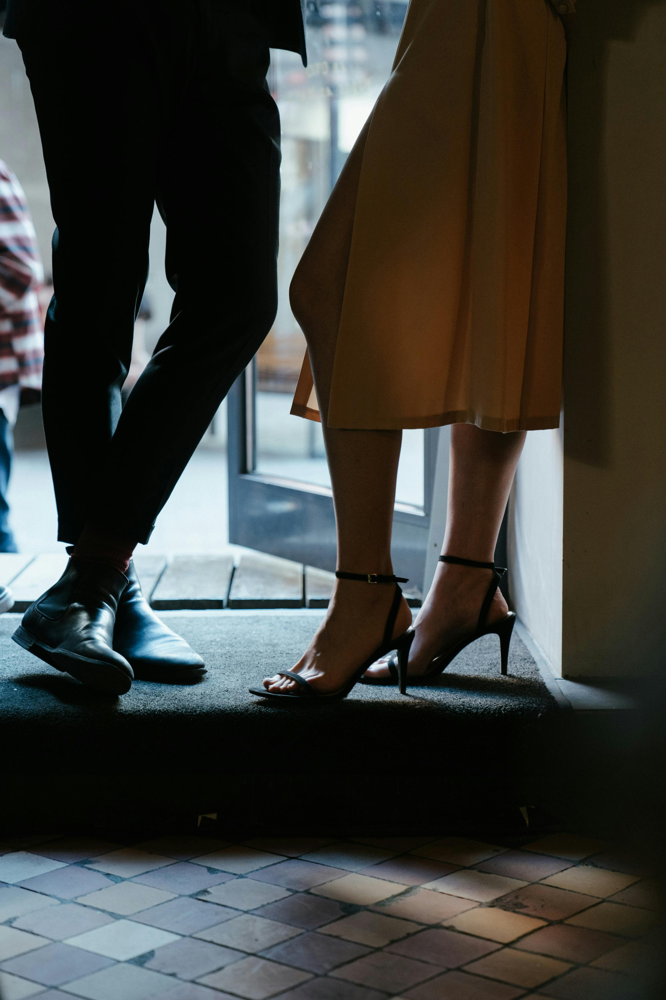
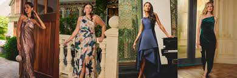

1. Smart Casual Preferred
Guests are encouraged to wear neat, stylish, and presentable outfits. Smart casual looks such as dresses, shirts, trousers, blouses, and clean footwear are ideal for the Cucina atmosphere.

At Cucina, we value a refined yet comfortable dining atmosphere. Our dress code helps maintain the elegant experience our guests expect.
Guests are encouraged to wear neat, stylish, and presentable outfits. Smart casual looks such as dresses, shirts, trousers, blouses, and clean footwear are ideal for the Cucina atmosphere.
Clothing such as excessively ripped outfits, unclean slippers, sleepwear, or clothing considered too relaxed for a premium dining space is discouraged.

Whether you are visiting for a date night, celebration, business dinner, or casual evening, we recommend attire that matches the occasion and respects the setting.

Clean and presentable footwear is required. Closed shoes, heels, or neat sandals are recommended. Bathroom slippers or overly worn-out footwear are not suitable for the dining environment.

Guests are expected to maintain a clean and well-groomed appearance. Proper hygiene and a tidy presentation contribute to the overall dining experience at Cucina.
Clothing with offensive graphics, inappropriate messages, or overly revealing styles is discouraged. We aim to maintain a respectful and comfortable environment for all guests.
